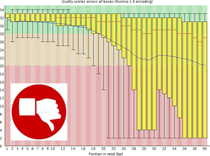

Step 1: Data Quality Control
Raw sequencing data (FASTQ files) is assessed for quality using tools like FastQC and MultiQC. This step detects issues such as adapter contamination, low-quality reads, or GC bias before continuing with further analysis.


Step 2: Trimming
Trimming removes adapter sequences and low-quality bases from reads. Tools like Trimmomatic or fastp ensure that only high-quality sequences are kept, improving mapping efficiency and accuracy.
Step 3: QIIME
QIIME 2 is a powerful, extensible, and decentralized microbiome analysis package with a focus on data and analysis transparency. This package enables researchers to start an analysis with raw DNA sequence data and finish with publication-quality figures and statistical results.
Step 3.1: Data importation and preprocessing
In metagenomic workflows, raw sequencing data must undergo a series of preprocessing steps to ensure accuracy and reliability of downstream analyses. These steps include:
- Demultiplexing:
Assigning sequencing reads to their corresponding samples based on barcode sequences,thereby enabling the separation of mixed data generated in multiplexed sequencing runs.
- Primer removal:
Trimming amplification primer sequences from the reads, as their presence can introduce bias and hinder accurate sequence alignment, taxonomic classification, and diversity estimation.
- Paired-end read joining:
Merging forward and reverse reads that overlap into a single contiguous sequence, which improves read quality, extends sequence length, and enhances the resolution of microbial community profiling.
Step 3.2: Denoising and Clustering
In this step, sequencing reads are processed to remove errors, reduce redundancy, and identify biologically meaningful sequence variants.
- Denoising:
Raw sequencing reads are processed to correct errors and remove spurious or low-quality sequences, ensuring high-fidelity data for downstream analysis.
- Dereplication:
Identical sequences are consolidated to reduce redundancy, optimize computational efficiency, and minimize memory usage during subsequent processing steps.
- Clustering:
Similar sequences are grouped into representative sequences, enabling robust identification of biologically relevant variants.
For this workflow, the DADA2 algorithm implemented in QIIME 2 is employed. DADA2 performs comprehensive error correction, filters out chimeric and singleton sequences, merges paired-end reads, and generates dereplicated, high-quality sequence variants.
The resulting features, obtained after denoising and clustering, are referred to as amplicon sequence variants (ASVs), representing distinct biological sequences at single-nucleotide resolution.
Step 3.3: Taxonomic assignment
A central objective in many metagenomic studies is the identification of the organisms present within a sample, often at the genus or species level. This information is essential for addressing questions such as the detection of potential pathogens in clinical samples or the characterization of microbial communities in environmental contexts.
Taxonomic assignment is achieved by comparing query sequences (i.e., features such as ASVs) against curated reference databases containing sequences of known taxonomic composition.
Step 3.4: Diversity analysis
Diversity analyses assess the composition and structure of microbial communities based on phylogenetic relationships between features (e.g., ASVs, OTUs). When sequencing phylogenetic markers such as the 16S rRNA gene, sequences can be aligned to infer evolutionary relatedness, enabling a deeper understanding of community diversity.
These analyses are typically divided into two categories: alpha diversity, which quantifies diversity within individual samples (e.g., richness and evenness), and beta diversity, which measures compositional differences between samples or groups of samples. Statistical comparisons of alpha and beta diversity allow investigators to determine whether microbial diversity differs significantly across conditions, environments, or host-associated factors.
Step 4: Quantification
Gene-level quantification determines how many reads align to each gene using tools like featureCounts or HTSeq-count. The result is a count matrix used for comparing gene expression across conditions.
Step 5: Differential expression analysis
Statistical analysis is performed using tools like DESeq2 to identify genes with significant differences in expression between conditions (e.g., control vs treatment). Outputs include volcano plots, fold changes, and corrected p-values.
➤ View interactive volcano plot report
Step 5.1: Gene contribution to each PC. PCA loadings biplot.
PCA does not discard any samples or characteristics (genes). Instead, it reduces the overwhelming number of dimensions by constructing principal components (PCs).
PCs describe variation and account for the varied influences of the original characteristics. Such influences, or loadings, can be traced back from the PCA plot to find out what produces the differences among clusters.
A loading plot shows how strongly each gene influences a principal component. Additionally, the angles between the vectors tell how characteristics correlate with one another:
- When two vectors are close, forming a small angle, the two variables they represent are positively correlated.
- If they meet each other at 90°, they are not likely to be correlated.
- When they diverge and form a large angle (close to 180°), they are negatively correlated.